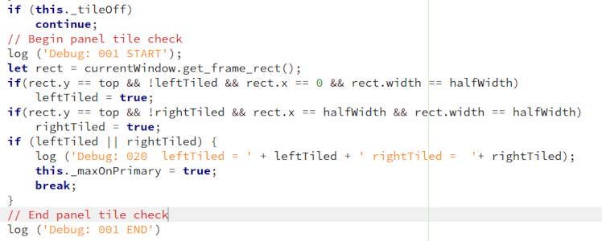

|
|
|
|
|
Debugging extensions requires examination of the system log. Most Linux Distributions use systemd. The systemd command journalctl is very useful for debugging extensions. Using the Xorg Session when debugging allows "Alt F2 r" to read the extension code from disk before reloading. Wayland requires logout and login.
Start journalctl with the -f option and direct the output to a file.
$ sudo journalctl -f > /tmp/error.txt
Reload the extension that failed.
Stop journalctl with "Ctrl c"
$ cat /tmp/error.txt or examine the file with an editor.
Near the end of the file you should find logging that identifies why the extension did not reload.
... Reloading Activities Configurator...
... JS ERROR: Extension activities-config@nls1729: ImportError: No JS module 'cairov' ...
Coding errors can exist that do not prevent an extension from loading. When the erroneous code is
executed a JS error can occur.
The following example is a an error which occurs when a preference is selected.
In this example journalctl -f is started in a
terminal session. The preference is selected and the error is immediately
identified in the journalctl terminal session.
In this case setting a preference fails due to a simple coding error, "thia"
instead of "this".
... JS ERROR: ReferenceError: thia is not defined
... extensions/activities-config@nls1729/extension.js:455:9
If you can create an instance of an extension error by manual action simply monitoring the
output of journalctl -f can reveal the code in error.
If the problem does not generate a JS error, it may generate a warning or other useful messages.
Using journalctl -f or journalctl --no-pager > /tmp/error.txt with the log function can be
effective in isolating the problem.
log ('Debug: 001 START');
suspected extension code...
log ('Debug: 001 END');
Using numbered log function pairs along the expected execution path can verify the code is
executing in the expected sequence.
The system log receives messages from many sources in real time. Selectively displaying the messages with grep is useful.
Using "journalctl -f | grep Debug:" can uncover cases where a segment of code is not executed
or not executed completely.
The contents of variables can be verified.
log ('Debug: 020 this._var = ' + this._var);
Example:

$ sudo journalctl -f | grep Debug
...gnome-shell[2009]: Debug: 001 START
...gnome-shell[2009]: Debug: 001 END
...gnome-shell[2009]: Debug: 020 leftTiled = true rightTiled = false
...gnome-shell[2009]: Debug: 001 END
...gnome-shell[2009]: Debug: 001 START
...gnome-shell[2009]: Debug: 020 leftTiled = false rightTiled = true
...gnome-shell[2009]: Debug: 001 END
The log function is very useful in debugging extensions.